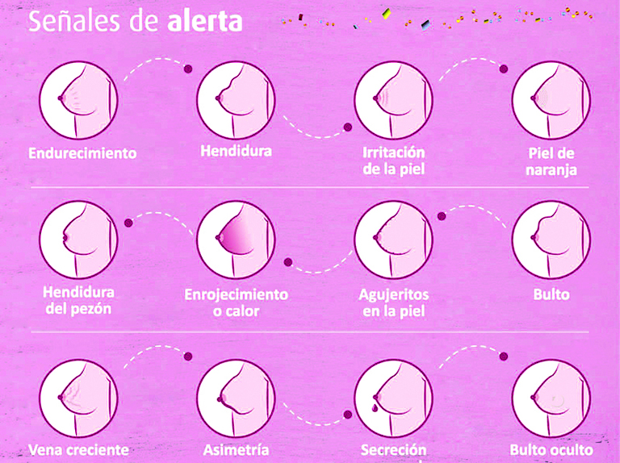

¿Por qué es importante informarse?
El cáncer de mama es una de las principales causas de muerte en mujeres a nivel mundial. Sin embargo, detectarlo a tiempo aumenta significativamente las posibilidades de tratamiento exitoso.
🔍 La autoexploración y los chequeos médicos regulares pueden marcar la diferencia, permitiendo detectar anomalías antes de que se presenten síntomas evidentes.
🔬 ¿Qué es el cáncer de mama?
Es una enfermedad caracterizada por el crecimiento descontrolado de células en el tejido mamario. Puede afectar a ambos sexos, aunque es mucho más frecuente en mujeres.
- Afecta principalmente a mujeres mayores de 40 años, aunque puede presentarse a cualquier edad.
- Existen varios tipos según la ubicación y características celulares del tumor.
- El tratamiento varía según el tipo, la etapa en que se diagnostique y la salud general del paciente.
Signos importantes a detectar
Bulto o masa en el seno
La aparición de un bulto es uno de los signos más comunes. No todos son malignos, pero es importante hacer evaluación médica temprana para un diagnóstico preciso.Dolor persistente en el seno o axila
Un dolor constante y sin causa aparente puede indicar inflamación o presión interna. Si el dolor persiste, debe ser consultado con un especialista.Cambios en la forma o textura del seno
Alteraciones como engrosamiento, enrojecimiento o piel con textura de naranja pueden ser señales de alerta que requieren evaluación médica.Retracción del pezón o secreciones
Cambios en el pezón o secreciones anormales pueden indicar alteraciones internas. La consulta médica es fundamental para descartar enfermedades.🛡️ Prevención y cuidados
- Realiza una autoexploración mamaria mensual para familiarizarte con tu cuerpo y detectar cambios tempranos.
- Acude a chequeos médicos clínicos periódicos según recomendación profesional.
- Mantén una dieta balanceada, rica en frutas, verduras y baja en grasas saturadas.
- Practica actividad física regular para fortalecer el sistema inmunológico y mantener un peso saludable.
- Evita el consumo de alcohol y tabaco, factores que aumentan el riesgo de cáncer.
- Infórmate sobre tus antecedentes familiares y comparte esta información con tu médico.